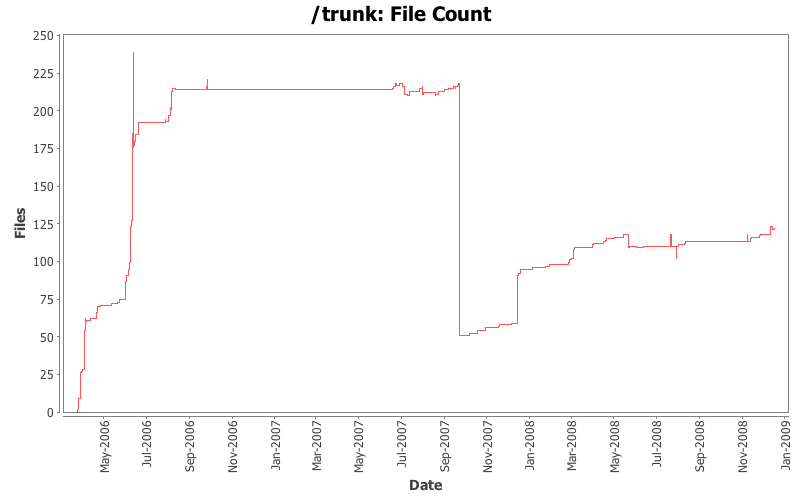
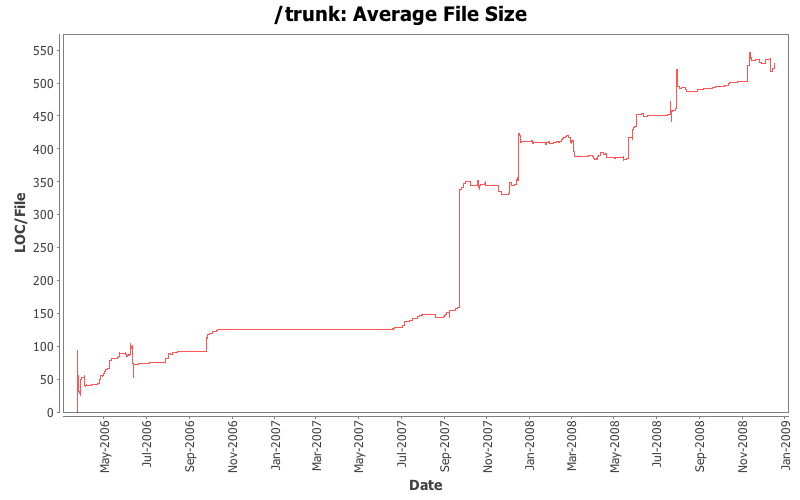

File Sizes and File Counts
- Total Files:
- 130
- Average File Size:
- 367.5 lines
- Average Revisions Per File:
- 11.5


File Types
| Type |
Files |
LOC |
LOC per file |
| Totals |
130 (100.0%) |
47773 (100.0%) |
367.4 |
| *.java |
113 (86.9%) |
41072 (86.0%) |
363.4 |
| *.clj |
10 (7.7%) |
6105 (12.8%) |
610.5 |
| *.html |
3 (2.3%) |
396 (0.8%) |
132.0 |
| *.xml |
2 (1.5%) |
86 (0.2%) |
43.0 |
| *.iml |
1 (0.8%) |
69 (0.1%) |
69.0 |
| *.txt |
1 (0.8%) |
45 (0.1%) |
45.0 |
Largest Files
| File |
Lines of Code |
 src/jvm/clojure/lang/Compiler.java src/jvm/clojure/lang/Compiler.java |
4628 |
| src/jvm/clojure/lang/Numbers.java |
4217 |
| src/clj/clojure/core.clj |
3616 |
| src/jvm/clojure/asm/MethodWriter.java |
3029 |
| src/jvm/clojure/asm/ClassReader.java |
2224 |
| src/jvm/clojure/lang/RT.java |
1703 |
| src/jvm/clojure/asm/commons/GeneratorAdapter.java |
1533 |
| src/jvm/clojure/asm/Frame.java |
1506 |
| src/jvm/clojure/asm/ClassWriter.java |
1415 |
| src/jvm/clojure/lang/RestFn.java |
1335 |
| src/jvm/clojure/lang/LispReader.java |
1043 |
| src/jvm/clojure/lang/PersistentTreeMap.java |
998 |
| src/jvm/clojure/asm/commons/AnalyzerAdapter.java |
938 |
| src/jvm/clojure/asm/Type.java |
872 |
| src/jvm/clojure/lang/PersistentHashMap.java |
746 |
| src/jvm/clojure/asm/commons/AdviceAdapter.java |
681 |
| src/clj/clojure/genclass.clj |
637 |
| src/jvm/clojure/lang/LockingTransaction.java |
554 |
| src/jvm/clojure/lang/APersistentVector.java |
518 |
| src/jvm/clojure/asm/commons/SerialVersionUIDAdder.java |
508 |
Files With Most Revisions
| File |
Revisions |
| src/jvm/clojure/lang/Compiler.java |
267 |
 src/boot.clj src/boot.clj |
240 |
| src/jvm/clojure/lang/RT.java |
205 |
| src/jvm/clojure/lang/LispReader.java |
67 |
| src/clj/clojure/boot.clj |
59 |
| src/jvm/clojure/lang/Var.java |
53 |
| src/jvm/clojure/lang/Reflector.java |
47 |
| src/cli/runtime/RT.cs |
38 |
| src/lisp/clojure.lisp |
34 |
| src/jvm/clojure/lang/PersistentTreeMap.java |
30 |
| src/clj/clojure/core.clj |
29 |
| src/jvm/clojure/lang/BytecodeCompiler.java |
29 |
| clojure.markdown |
29 |
| src/jvm/clojure/lang/LockingTransaction.java |
29 |
| src/jvm/clojure/lang/PersistentArrayMap.java |
29 |
| src/jvm/clojure/lang/Numbers.java |
28 |
| src/jvm/clojure/lang/PersistentHashMap.java |
27 |
| src/cli/runtime/PersistentArray.cs |
26 |
| src/jvm/clojure/lang/TRef.java |
23 |
| src/jvm/clojure/lang/Ref.java |
23 |